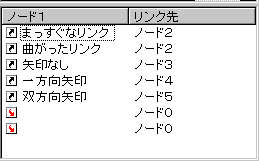
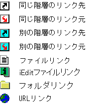
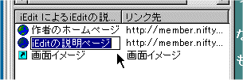

リンクビューの機能
リンクビューの表示
リンクビューには、
- 選択されているノードから他のノードへつながっているリンク
- 選択されているノードにつながっている他のノードからのリンク
- 選択されているノードから他のファイルへのリンク
- 選択されているノードから他のiEditファイルへのリンク
- 選択されているノードから他のフォルダへのリンク
- 選択されているノードからWebのURLへのリンク
が表示されます。アウトラインビュー上の階層が違うノード間のリンクは水色のアイコンで表示されます。 それぞれのアイコンは右下の図のようになっています。
アイコンをダブルクリックすることでリンク先(元)のノードにジャンプできます。リンクビューの右クリックメニューからジャンプ元のノードに戻ることも可能です。
ファイルへのリンクの場合は拡張子に関連づけられたアプリケーションでそのファイルを開きます。URLの場合は、Webブラウザーでリンク先のページを開きます。


ラベルのインライン編集
リンクのラベルはインラインで編集できます。

ファイルのドラッグ＆ドロップ機能
リンクビューにファイルをドラッグ＆ドロップ可能です。